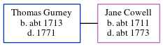

Thomas Gurney c1713 - 1771
[ Home ] | [ Calendar ] | [ Surnames Index ] | [ Errors ] | [ Family History ]Thomas Gurney, the husband of Jane Cowell (the six times great-aunt of Nigel Horne), was born c. 17131 and baptised in Kent, England on 26 Feb 1713. He married Jane at St John the Baptist Church, Margate, Kent on 29 May 17321, which is also where he died in 1771.
Citations
- Kent, England, Tyler Index to Parish Registers, 1538-1874 Online publication - Provo, UT, USA: Ancestry.com Operations, Inc., 2010. This collection was indexed by Ancestry World Archives Project contributors.Original data - Frank Watt Tyler. The Tyler Collection. Canterbury, Kent, England: The Institute of Herald
Family Tree
Map
Generated by ged2site. Last updated on Jul 3, 2024
Known Issues
Death date (1771) has no citations
Baptism information not used to determine a parent
Date of birth is known, but not place